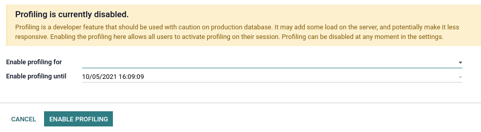
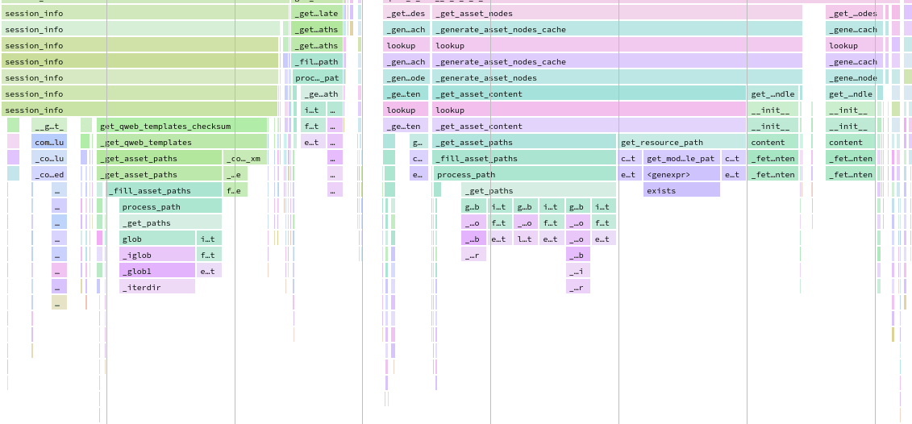

Performance¶
Profiling¶
Profiling is about analysing the execution of a program and measure aggregated data. These data can be the elapsed time for each function, the executed SQL queries…
While profiling does not improve the performance of a program by itself, it can prove very helpful in finding performance issues and identifying which part of the program is responsible for them.
Odoo provides an integrated profiling tool that allows recording all executed queries and stack traces during execution. It can be used to profile either a set of requests of a user session, or a specific portion of code. Profiling results can be either inspected with the integrated speedscope open source app allowing to visualize a flamegraph view or analyzed with custom tools by first saving them in a JSON file or in the database.
Enable the profiler¶
The profiler can either be enabled from the user interface, which is the easiest way to do so but allows profiling only web requests, or from Python code, which allows profiling any piece of code including tests.
Before starting a profiling session, the profiler must be enabled globally on the database. This can be done in two ways:
Open the developer mode tools, then toggle the Enable profiling button. A wizard suggests a set of expiry times for the profiling. Click on ENABLE PROFILING to enable the profiler globally.
Go to Settings –> General Settings –> Performance and set the desired time to the field Enable profiling until.
After the profiler is enabled on the database, users can enable it on their session. To do so, toggle the Enable profiling button in the developer mode tools again. By default, the recommended options Record sql and Record traces are enabled. To learn more about the different options, head over to Collectors.

When the profiler is enabled, all the requests made to the server are profiled and saved into
an ir.profile record. Such records are grouped into the current profiling session which
spans from when the profiler was enabled until it is disabled.
Note
Odoo Online databases cannot be profiled.
Starting the profiler manually can be convenient to profile a specific method or a part of the code. This code can be a test, a compute method, the entire loading, etc.
To start the profiler from Python code, call it as a context manager. You may specify what
you want to record through the parameters. A shortcut is available for profiling test classes:
self.profile(). See Collectors for more information on
the collectors parameter.
Example
with Profiler():
do_stuff()
Example
with Profiler(collectors=['sql', PeriodicCollector(interval=0.1)]):
do_stuff()
Example
with self.profile():
with self.assertQueryCount(__system__=1211):
do_stuff()
Note
The profiler is called outside of the assertQueryCount in order to catch queries made
when exiting the context manager (e.g., flush).
- class odoo.tools.profiler.Profiler[source]¶
Context manager to use to start the recording of some execution. Will save sql and async stack trace by default.
- __init__(collectors=None, db=Ellipsis, profile_session=None, description=None, disable_gc=False, params=None)[source]¶
- Parameters
db – database name to use to save results. Will try to define database automatically by default. Use value
Noneto not save results in a database.collectors – list of string and Collector object Ex: [‘sql’, PeriodicCollector(interval=0.2)]. Use
Nonefor default collectorsprofile_session – session description to use to reproup multiple profile. use make_session(name) for default format.
description – description of the current profiler Suggestion: (route name/test method/loading module, …)
disable_gc – flag to disable gc durring profiling (usefull to avoid gc while profiling, especially during sql execution)
params – parameters usable by collectors (like frame interval)
When the profiler is enabled, all executions of a test method are profiled and saved into an
ir.profile record. Such records are grouped into a single profiling session. This is
especially useful when using the @warmup and @users decorators.
Tip
It can be complicated to analyze profiling results of a method that is called several times because all the calls are grouped together in the stack trace. Add an execution context as a context manager to break down the results into multiple frames.
Example
for index in range(max_index):
with ExecutionContext(current_index=index): # Identify each call in speedscope results.
do_stuff()
Analyse the results¶
To browse the profiling results, make sure that the profiler is enabled globally on the
database, then open the developer mode tools and click on the button in the top-right corner of the profiling
section. A list view of the ir.profile records grouped by profiling session opens.

Each record has a clickable link that opens the speedscope results in a new tab.
Speedscope falls out of the scope of this documentation but there are a lot of tools to try: search, highlight of similar frames, zoom on frame, timeline, left heavy, sandwich view…
Depending on the profiling options that were activated, Odoo generates different view modes that you can access from the top menu.

The Combined view shows all the SQL queries and traces merged togethers.
The Combined no context view shows the same result but ignores the saved execution context <performance/profiling/enable>`.
The sql (no gap) view shows all the SQL queries as if they were executed one after another, without any Python logic. This is useful for optimizing SQL only.
The sql (density) view shows only all the SQL queries, leaving gap between them. This can be useful to spot if eiter SQL or Python code is the problem, and to identify zones in where many small queries could be batched.
The frames view shows the results of only the periodic collector.
Important
Even though the profiler has been designed to be as light as possible, it can still impact performance, especially when using the Sync collector. Keep that in mind when analyzing speedscope results.
Collectors¶
Whereas the profiler is about the when of profiling, the collectors take care of the what.
Each collector specializes in collecting profiling data in its own format and manner. They can be individually enabled from the user interface through their dedicated toggle button in the developer mode tools, or from Python code through their key or class.
There are currently four collectors available in Odoo:
Name |
Toggle button |
Python key |
Python class |
|---|---|---|---|
Record sql |
|
|
|
Record traces |
|
|
|
Record qweb |
|
|
|
No |
|
|
By default, the profiler enables the SQL and the Periodic collectors. Both when it is enabled from the user interface or Python code.
SQL collector¶
The SQL collector saves all the SQL queries made to the database in the current thread (for all cursors), as well as the stack trace. The overhead of the collector is added to the analysed thread for each query, which means that using it on a lot of small queries may impact execution time and other profilers.
It is especially useful to debug query counts, or to add information to the Periodic collector in the combined speedscope view.
Periodic collector¶
This collector runs in a separate thread and saves the stack trace of the analysed thread at every
interval. The interval (by default 10 ms) can be defined through the Interval option in
the user interface, or the interval parameter in Python code.
Warning
If the interval is set at a very low value, profiling long requests will generate memory issues. If the interval is set at a very high value, information on short function executions will be lost.
It is one of the best way to analyse performance as it should have a very low impact on the execution time thanks to its separate thread.
QWeb collector¶
This collector saves the Python execution time and queries of all directives. As for the SQL
collector, the overhead can be important when executing a
lot of small directives. The results are different from other collectors in terms of collected data,
and can be analysed from the ir.profile form view using a custom widget.
It is mainly useful for optimizing views.
Sync collector¶
This collector saves the stack for every function’s call and return and runs on the same thread, which greatly impacts performance.
It can be useful to debug and understand complex flows, and follow their execution in the code. It is however not recommended for performance analysis because the overhead is high.
Performance pitfalls¶
Be careful with randomness. Multiple executions may lead to different results. E.g., a garbage collector being triggered during execution.
Be careful with blocking calls. In some cases, external
c_callmay take some time before releasing the GIL, thus leading to unexpected long frames with the Periodic collector. This should be detected by the profiler and give a warning. It is possible to trigger the profiler manually before such calls if needed.Pay attention to the cache. Profiling before that the
view/assets/… are in cache can lead to different results.Be aware of the profiler’s overhead. The SQL collector’s overhead can be important when a lot of small queries are executed. Profiling is practical to spot a problem but you may want to disable the profiler in order to measure the real impact of a code change.
Profiling results can be memory intensive. In some cases (e.g., profiling an install or a long request), it is possible that you reach memory limit, especially when rendering the speedscope results, which can lead to an HTTP 500 error. In this case, you may need to start the server with a higher memory limit:
--limit-memory-hard $((8*1024**3)).
Database population¶
Odoo CLI offers a database population feature through the CLI command odoo-bin populate.
Instead of the tedious manual, or programmatic, specification of test data, one can use this feature to fill a database on demand with the desired number of test data. This can be used to detect diverse bugs or performance issues in tested flows.
To populate a given model, the following methods and attributes can be defined.
- Model._populate_sizes¶
Return a dict mapping symbolic sizes (
'small','medium','large') to integers, giving the minimal number of records that_populate()should create.The default population sizes are:
small: 10medium: 100large: 1000
- Model._populate_dependencies¶
Return the list of models which have to be populated before the current one.
- Return type
- Model._populate(size)[source]¶
Create records to populate this model.
- Parameters
size (str) – symbolic size for the number of records:
'small','medium'or'large'
- Model._populate_factories()[source]¶
Generates a factory for the different fields of the model.
factoryis a generator of values (dict of field values).Factory skeleton:
def generator(iterator, field_name, model_name): for counter, values in enumerate(iterator): # values.update(dict()) yield values
See
odoo.tools.populatefor population tools and applications.- Returns
list of pairs(field_name, factory) where
factoryis a generator function.- Return type
Note
It is the responsibility of the generator to handle the field_name correctly. The generator could generate values for multiple fields together. In this case, the field_name should be more a “field_group” (should be begin by a “_”), covering the different fields updated by the generator (e.g. “_address” for a generator updating multiple address fields).
Note
You have to define at least _populate() or
_populate_factories() on the model to enable database population.
Example
from odoo.tools import populate
class CustomModel(models.Model)
_inherit = "custom.some_model"
_populate_sizes = {"small": 100, "medium": 2000, "large": 10000}
_populate_dependencies = ["custom.some_other_model"]
def _populate_factories(self):
# Record ids of previously populated models are accessible in the registry
some_other_ids = self.env.registry.populated_models["custom.some_other_model"]
def get_some_field(values=None, random=None, **kwargs):
""" Choose a value for some_field depending on other fields values.
:param dict values:
:param random: seeded :class:`random.Random` object
"""
field_1 = values['field_1']
if field_1 in [value2, value3]:
return random.choice(some_field_values)
return False
return [
("field_1", populate.randomize([value1, value2, value3])),
("field_2", populate.randomize([value_a, value_b], [0.5, 0.5])),
("some_other_id", populate.randomize(some_other_ids)),
("some_field", populate.compute(get_some_field, seed="some_field")),
('active', populate.cartesian([True, False])),
]
def _populate(self, size):
records = super()._populate(size)
# If you want to update the generated records
# E.g setting the parent-child relationships
records.do_something()
return records
Population tools¶
Multiple population tools are available to easily create the needed data generators.
- odoo.tools.populate.cartesian(vals, weights=None, seed=False, formatter=<function format_str>, then=None)[source]¶
Return a factory for an iterator of values dicts that combines all
valsfor the field with the other field values in input.- Parameters
vals (list) – list in which a value will be chosen, depending on
weightsweights (list) – list of probabilistic weights
seed – optional initialization of the random number generator
formatter (function) – (val, counter, values) –> formatted_value
then (function) – if defined, factory used when vals has been consumed.
- Returns
function of the form (iterator, field_name, model_name) -> values
- Return type
- odoo.tools.populate.compute(function, seed=None)[source]¶
Return a factory for an iterator of values dicts that computes the field value as
function(values, counter, random), wherevaluesis the other field values,counteris an integer, andrandomis a pseudo-random number generator.
- odoo.tools.populate.constant(val, formatter=<function format_str>)[source]¶
Return a factory for an iterator of values dicts that sets the field to the given value in each input dict.
- odoo.tools.populate.iterate(vals, weights=None, seed=False, formatter=<function format_str>, then=None)[source]¶
Return a factory for an iterator of values dicts that picks a value among
valsfor each input. Once allvalshave been used once, resume asthenor as arandomizegenerator.- Parameters
vals (list) – list in which a value will be chosen, depending on
weightsweights (list) – list of probabilistic weights
seed – optional initialization of the random number generator
formatter (function) – (val, counter, values) –> formatted_value
then (function) – if defined, factory used when vals has been consumed.
- Returns
function of the form (iterator, field_name, model_name) -> values
- Return type
- odoo.tools.populate.randint(a, b, seed=None)[source]¶
Return a factory for an iterator of values dicts that sets the field to a random integer between a and b included in each input dict.
- odoo.tools.populate.randomize(vals, weights=None, seed=False, formatter=<function format_str>, counter_offset=0)[source]¶
Return a factory for an iterator of values dicts with pseudo-randomly chosen values (among
vals) for a field.- Parameters
- Returns
function of the form (iterator, field_name, model_name) -> values
- Return type
Good practices¶
Batch operations¶
When working with recordsets, it is almost always better to batch operations.
Example
Don’t call a method that runs SQL queries while looping over a recordset because it will do so for each record of the set.
def _compute_count(self):
for record in self:
domain = [('related_id', '=', record.id)]
record.count = other_model.search_count(domain)
Instead, replace the search_count with a read_group to execute one SQL query for the entire
batch of records.
def _compute_count(self):
if self.ids:
domain = [('related_id', 'in', self.ids)]
counts_data = other_model.read_group(domain, ['related_id'], ['related_id'])
mapped_data = {
count['related_id'][0]: count['related_id_count'] for count in counts_data
}
else:
mapped_data = {}
for record in self:
record.count = mapped_data.get(record.id, 0)
Note
This example is not optimal nor correct in all cases. It is only a substitute for a
search_count. Another solution could be to prefetch and count the inverse One2many field.
Example
Don’t create records one after another.
for name in ['foo', 'bar']:
model.create({'name': name})
Instead, accumulate the create values and call the create method on the batch. Doing so has
mostly no impact and helps the framework optimize fields computation.
create_values = []
for name in ['foo', 'bar']:
create_values.append({'name': name})
records = model.create(create_values)
Example
Fail to prefetch the fields of a recordset while browsing a single record inside a loop.
for record_id in record_ids:
model.browse(record_id)
record.foo # One query is executed per record.
Instead, browse the entire recordset first.
records = model.browse(record_ids)
for record in records:
record.foo # One query is executed for the entire recordset.
We can verify that the records are prefetched in batch by reading the field prefetch_ids which
includes each of the record ids.browsing all records together is unpractical,
If needed, the with_prefetch method can be used to disable batch prefetching:
for values in values_list:
message = self.browse(values['id']).with_prefetch(self.ids)
Reduce the algorithmic complexity¶
Algorithmic complexity is a measure of how long an algorithm would take to complete in regard to the
size n of the input. When the complexity is high, the execution time can grow quickly as the input
becomes larger. In some cases, the algorithmic complexity can be reduced by preparing the input’s
data correctly.
Example
For a given problem, let’s consider a naive algorithm crafted with two nested loops for which the complexity in in O(n²).
for record in self:
for result in results:
if results['id'] == record.id:
record.foo = results['foo']
break
Assuming that all results have a different id, we can prepare the data to reduce the complexity.
mapped_result = {result['id']: result['foo'] for result in results}
for record in self:
record.foo = mapped_result.get(record.id)
Example
Choosing the bad data structure to hold the input can lead to quadratic complexity.
invalid_ids = self.search(domain).ids
for record in self:
if record.id in invalid_ids:
...
If invalid_ids is a list-like data structure, the complexity of the algorithm may be quadratic.
Instead, prefer using set operations like casting invalid_ids to a set.
invalid_ids = set(invalid_ids)
for record in self:
if record.id in invalid_ids:
...
Depending on the input, recordset operations can also be used.
invalid_ids = self.search(domain)
for record in self - invalid_ids:
...
Use indexes¶
Database indexes can help fasten search operations, be it from a search in the or through the user interface.
name = fields.Char(string="Name", index=True)
Warning
Be careful not to index every field as indexes consume space and impact on performance when
executing one of INSERT, UPDATE, and DELETE.